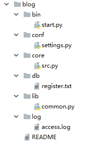
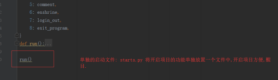
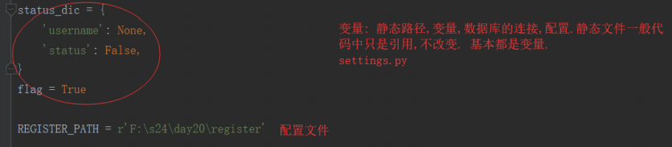
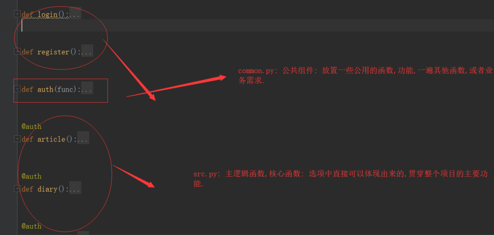

规范目录优点：
规范化目录结构

(1) start.py文件：首要配置启动文件，运行run()就可以执行项目

#start
import sys
import os
BASE_PATH = os.path.dirname(os.path.dirname(__file__))
#BASE_PATH = "../../blog"#此方法也可以用
sys.path.append(BASE_PATH)
from core.src import run
if __name__ == '__main__':
run()(2)setting.py文件：配置文件。将项目中的静态路径，数据库连接设置等文件放在settings文件中
#settings
import os
BASE_PATH = os.path.dirname(os.path.dirname(__file__))
REGISTER_PATH = os.path.join(BASE_PATH,'db','register')#路径拼接(3) src.py文件：主核心逻辑文件，
(4) common.py文件：公共组件文件，如装饰器
#src.py
from conf import settings#引用register路径
from lib import common#引用common里面的装饰器(5) 类似于register文件：用户信息，数据相关，多个文件
(6) logging日志文件：记录用户访问次数，转账，取钱等等，主要用于记录用户的行为
(7) README文件：说明书